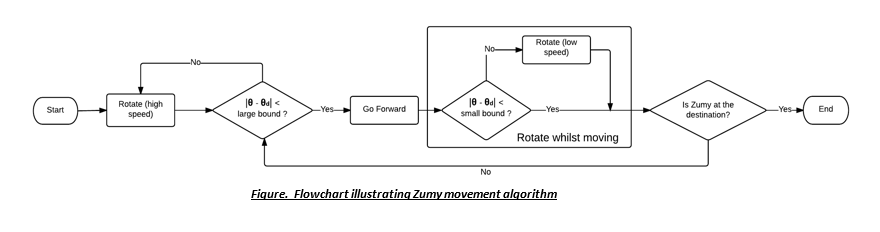

Zumy Light Exploration EE106A Fall 2015 Final Project

"simulating the exploration of an unknown planet"
1) Introduction
The goal of this project is to successfully launch an autonomous network of three Zumies (small mobile robots, as seen above) to explore a surrounding area in search of light. The purpose of searching for light is to recharge the Zumies' solar cells and effectively keep each other running autonomously whilst exploring an unknown enviroment. Interesting features of this project are the ROS (Robot Operating System) network that connects, coordinates, and runs the Zumies as well as the light sensing and position tracking components.
Our mission is to one day have the Zumies on another planet, aiding in autonomous planet exploration with the self-sustainable tactic of locating light and communicating to each other the best source of light.
Here is a sample video.
2) Design
Initial Design
Our initial design was to mount cameras and four photocells onto each Zumy instead of using a global camera to simulate realistic exploration. AR tags placed in the field of exploration would be objects of known positions - landmark AR tags. From these AR tags, a Zumy can determine it's position within the field. Further, when a Zumy does not see an AR tag, and thus cannot determine its position accurately from it's camera readings, it would instead use the Kalman Filter, integrating readings from it's accelerometer to accurately calculate its position.
In terms of exploring, the three Zumies would explore an equal region in the field and when one of them found a sufficient source of light to charge its solar cells, it would signal to the others to stop searching. The other Zumies would stop searching and having received the position of it's fellow Zumy, they would navigate over to the source of light.
Final Design
*position tracking Must meet using landmark AR tags + kalman filter. Only came out to be landmark AR tags + global camera. *area exploration. Split area to explore evenly between zumies. Get a zumy to send a signal when it sees area of highest exploration. Other zumies gather to it. Need to outfit zumy with photocells + camera.
start off with an overview of the final design showing the entire setup and then we explain each section of the design in more details (below) - use pictures/diagrams whenever you can. *position tracking Only working with landmark AR tags + global camera. Created a node called tf_service and this took tf from readings off of the zumy, converted them into positions + orientation of zumy area from conversion of quaternion & vector 3 to rotations into position and theta angle. Created a node called global_service and this takes tf readings from the global camera and because it takes the tf between the zumy’s it is looking at and the origin tag, does same processing as above and returns the position and theta of the zumy. *area exploration. Made an explorer node that created a service with the light tracking zumies and this node told them where to go after reading each zumy’s light and position data. Explorer node split area to explore evenly between zumies, was in charge of the keepExploring flag and got the zumies to travel to each other. Can also issue hard stops. *zumy design Outfitted zumy with photocells. Talk about zumy design. Zumy has Microsoft lifecam mounted on it. Breadboard taped on it’s back and voltage dividers. Wires stick to the front of it into its analog pins for readings. Had to calibrate and find the right sensors that gave off similar readings. *zumy controller Each zumy has a controller node. This node takes in the zumy’s photo data and when the zumy sees an AR tag, takes the position and theta from the tf_service, or when the zumy does not see an AR tag, takes the position readings from the global_service. Controller takes both of these and sends this data to the explorer node. What gets back is a position it should make the zumy go to. The Controller knows the position of the zumy and calculates the correct twist to make and sends this twist to the zumy to go to.
Design Choices and Tradeoffs
Traded kalman filter for global camera. Did not add noise to the global camera reading, but should have to simulate reality. We decided to keep all of our services separate simply to be able to easily debug. Ideally, we would have combined these 3 services into 1. This one service would basically generate its own positions and thetas from parsing through all the tf’s, maintain a position and theta of each zumy, read in photo data readings from the zumy, do all the computation of the three services, and would effectively publish only a twist to each zumy.
ow do these design choices impact how well the project meets design criteria which would be encountered in a real engineering application, such as robustness, durability, and efficiency?
Meets pretty well because robustness was building around and on the zumy. Durability is another issue because zumy breaks down, but that’s not really our problem. Efficiency is that it can be expanded out.
3) Implementation
Hardware Used. Illustrate with pictures and diagrams.
Zumy - a small mobile robot. Relevant features are the Linux OS on the robot to interface with ROS, USB connectors for camera and wifi to communicate with network, pins for analog input, gyroscope and accelerometer originally meant to communicate with the Kalman filter.
Camera - camera mounted onto the zumy. Sends image to zumy which processes image with ar_track_alvar, an AR tag tracking library, which returns transforms used in our tracking algorithm
Photoresistor - light sensitive resistor. Has variable resistance that changes with exposure to light
Voltage divider circuit - simple circuit taking advantage of photoresistor’s dynamic resistance to output a variable voltage
Parts
Put 4 voltage divider circuits on a breadboard. Attached it to a piece of cardboard which was attached to back of zumy. Connected wires to analog inputs of Zumy. Transform between camera and AR tag is calculated by zumy and sent through wifi to network as a tf topic.
Zumy


System Architecture and Software Guide
Our software is primarily constructed from ROS packages and consists of topics, nodes, and services.
Topics
The following are the ROS topics that publish our system information.
- zumyxx/photo
Message Published: Float32MultiArray [found in std_msgs]
The 'xx' in the topic refers to the respective Zumy. For example, zumy3b/photo is photo data published by Zumy3b. The required files to upload onto the Zumy (zumy.py and zumy_ros_bridge.py) can be found in section 7 under the How to Run Guide.
Float32MultiArray is a complex data structure, consisting of two data types. The first is layout (called through Float32MultiArray.layout) and specifies the layout of the data of the array. The second is data (called through Float32MultiArray.data), which contains the actual float array. The format of this float array, for our purposes, is a four-element list of floats. Each float represents the analog value read from each photo resistor on the zumy. - tf
Message Published: TFMessage [found in tf2_msgs]
There are a variety of nodes that publish onto this topic.
The first nodes are usb_cam_zumyxx. Once again, "xx" denotes the correspoding Zumy. Thus a TFMessage from usb_cam_zumy3b is a TFMessage from Zumy3b. The Transform information encapsulated by the TFMessage from a usb_cam_zumy3b comes the Zumy's camera.
The other node that publishes to the tf topic is the global camera. The Transform encapsulated in it's TFMessage is the Transform between the origin tag to the Zumy's tag in the field.
TFMessage is also another complex message type. The fields to pay close attention to are its TFMessage.transforms[0].child_frame_id, which contains the publishing node (usb_cam or usb_cam_zumyxx) and TFMessage.transforms[0].transform, which contains the Transform. - zumyxx_cmd_vel
Message Published: Twist [found in geometry_msgs]
Publishing a Twist to zumyxx_cmd_vel makes the Zumy move. Of key note are that the Zumy cannot move sideways, and thus, only values written to Twist.linear.x (forward speed) and Twist.angular.z (rotation speed) are understood by the Zumy.
Nodes
Although there are many nodes present in our system, such as the camera nodes and service nodes, one of these nodes requires greater explanation and is outlined in greater detail below.
- Controller
Each Zumy in the system gets its own controller node. This controller is responsible for interfacing with all other nodes and services, which are explained below. Of key note is that this controller node grabs all of the information, specifically the photo data readings and the Zumy's current position, sends this to an Explorer Service, receives back the position it should make the Zumy go to, and finally, calculates and publishes the correct twist to the Zumy.
Services
The following are the services that enable our system information exchange and essentially run the system. Services are unique because unlike topics, information is not continuously published and is only exchanged when prompted and correctly follows the specified service messages. The services below indicate the side that initiates first and which effectively sends the request.
- tf_service - Controller Initiated
Service Request: string zumy
Service Response: bool updated, float32 theta, float32[] position
explanation - global_service - Controller Initiated
Service Request: string zumy
Service Response: bool updated, float32 theta, float32[] position
explanation - explore_service - Controller Initiated
Service Request: string zumy, float32[] position, float32[] photo_data, bool finished
Service Response: float32[] position, bool hard_stop
explanation
Pictures of services and stuff
System Architecture
Going to have to put some commands to tell people how to set up the project. Also what to change + catkin_make and setup bash stuff
4) Result
How well did your project work? What tasks did it perform?
The project was a success. We managed to get 1 Zumy to explore an area marked out with Landmark AR tags and with an overlooking global AR tag and measure the level of light as it does so. When the zumy records a level of light above a certain threshold, it stops and tells the other zumy to come join it. We only had 1 sensorized Zumy and 1 Unsensorized zumy because it meant we had to modifiy the hardware quite a bit and would make other Zumies unusable. The code is set up to easily allow other Zumies to join in.
Illustrate with a video and pictures
See pictures and videos.
5) Conclusion
Final Design Overview / Results. How well did your finished solution meet your design criteria?
Have a nice table showing our design criteria and comparing it to the final design criteria - explain why they are not the same if so
| Achieved | Objective | |
| Positioning System | 4 Landmark AR tags Mounted Camera Global Camera |
AR tags on each Zumy Mounted Cameras Kalman Filter |
| Light Sensing | 1 Zumy with 4 light sensors | Each Zumy has light sensors |
| Exploration | Split region between 2 Zumies | Split region between Zumies |
Difficulties. Does your solution have any flaws or hacks?
Kalman filter and sometimes the global camera wasn’t too reliable / The global camera is a hack and if we had more time we could remove it by adding a KF. → This is basically explaining any further improvements we wish to make
| Deviations | Temporary Fix | More Permanent Solution |
| Kalman Filter with accelerometer was not very accurate making position tracking difficult | Used a global camera to look at Zumies to simulate a system that can keep track of Zumy if it doesn't find an AR tage and origion to find orientation | Possible solutions include: - Improve filter, accelerometer, and gyroscope - Use wheel encoders to estimate distance |
| Using only 2 Zumies, only 1 has light sensors | Work with 2 zumies and have the one with light sensors be the one to "find" the light and have the one without any sensors move to it | Current code can easily be expanded to account for more zumies and setting up light sensors on Zumy is also relatively easy |
Summary
Successfully met attainable objectives, but not reach goals, such as using 3 Zumies.
Future Improvements
- Combine all services into one package that takes all the information around the system, parses through all of it, and simply issues each zumy a twist.
- Implement more permanent solutions, i.e. remove the global camera and use the Kalman Filter.
- Eliminate the use of AR tags by simply using image detection algorithms and by only using the Zumy's cameras.
- Improve exploration algorithm. The current exploration is random and this is not desirable for bigger areas of exploration.
- Add obstacles and implement obstacle avoidance. However, the obstacles will either have to have AR tags or the implement the image detection algorithm.
- Go up light gradient. Instead of stopping once the light sensor detects past a certain threshold, lower the threshold and have Zumy detect lower thresholds and move up a gradient to find brighter areas. This allows it to better find distant light sources.
6) Team
Gary Choi
Stuff
Gary Hoang
Stuff
Xavier Lavenir
Stuff
7) Additional Materials
Code / Code, URDFs, and launch files you wrote
Link to github
Guide to Running the code
Datasheets for components used in your solution
photocells, 10 k-ohm resistors